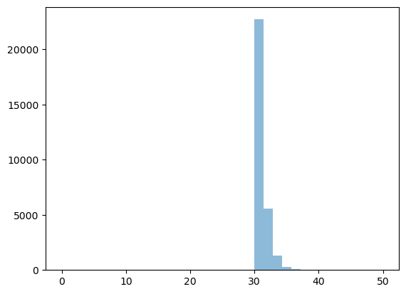

TA Exercise: Higgs to gamma gamma
TA Exercise: Higgs to gamma gamma#
J.A Hernando, 12 Febrero 2024
%matplotlib inline
%reload_ext autoreload
%autoreload 2
# numpy and matplotlib
import numpy as np
import pandas as pd
import matplotlib
import matplotlib.pyplot as plt
import scipy.stats as stats
import scipy.optimize as optimize
# possible styles: ggplot (simplicity), bmh (scientify data).
plt.style.context('seaborn-colorblind')
import htcore as htcore
import htcatalog as htcata
import httoys as httoys
import htplot as htplot
Exercise The following data correspond to the Higgs to gamma gamma events. selected by the ATLAS experiment during the first run of LHC. The list is the number of events in bins of the invariant mass of the two gammas.
Consider that the background follows an exponential distribution. and the Higgs signal a gaussian. Estimate the mean value of the Higgs mass and the standard deviation. Compute also the p-value considering that there is no Higgs. ¿Can you clain a discovery?
data = [
105.2488132203966, 1482.3547109494102,
105.94694793076935, 1503.662077292889,
106.86598817995558, 1434.6487389346337,
108.38398657859341, 1311.7123868462745,
109.86876744317898, 1234.516977482293,
111.3697517556002, 1245.7754702806433,
112.87897564379972, 1179.0326457113374,
114.3882702788114, 1014.8814679839438,
115.88820952245558, 1036.0332785385408,
117.41276837828192, 969.2273521057148,
118.89043313168807, 873.4079137564681,
120.4574933926158, 818.081657004803,
121.92304751778124, 836.9094993342806,
123.39214903526977, 822.1553610051167,
124.95333817131085, 822.4090865137866,
126.42222423057693, 750.576575836975,
127.90427602310393, 672.3445439970408,
129.47157601294538, 614.7488535289381,
130.9440004560878, 568.5376856762446,
132.40659813559245, 556.2351700746051,
133.92034607358522, 591.772599132705,
135.44382534524019, 535.1867361891088,
136.9596810587593, 550.770556931624,
138.43649676339962, 403.87073671190865,
139.95034161930397, 438.490676207407,
141.41347902388932, 421.07876317492423,
142.9923105700799, 372.55375964177597,
144.45095529103241, 397.67258500011167,
145.97321262165863, 352.654430461796,
147.49500474630946, 312.0402258239674,
148.95322733591394, 341.1552279438565,
150.41645519721672, 322.88699131961243,
151.98976888364348, 326.59772688391195,
153.45185095985872, 319.1762557553127,
154.86002513994268, 290.0204763215304]
ndata = len(data)
print("data ", ndata)
mass = np.array([data[int(2*i)] for i in range(int(ndata/2))])
counts = np.array([data[int(2*i+1)] for i in range(int(ndata/2))])
df = pd.DataFrame({'mass' : mass, 'counts': counts})
df
data 70
| mass | counts | |
|---|---|---|
| 0 | 105.248813 | 1482.354711 |
| 1 | 105.946948 | 1503.662077 |
| 2 | 106.865988 | 1434.648739 |
| 3 | 108.383987 | 1311.712387 |
| 4 | 109.868767 | 1234.516977 |
| 5 | 111.369752 | 1245.775470 |
| 6 | 112.878976 | 1179.032646 |
| 7 | 114.388270 | 1014.881468 |
| 8 | 115.888210 | 1036.033279 |
| 9 | 117.412768 | 969.227352 |
| 10 | 118.890433 | 873.407914 |
| 11 | 120.457493 | 818.081657 |
| 12 | 121.923048 | 836.909499 |
| 13 | 123.392149 | 822.155361 |
| 14 | 124.953338 | 822.409087 |
| 15 | 126.422224 | 750.576576 |
| 16 | 127.904276 | 672.344544 |
| 17 | 129.471576 | 614.748854 |
| 18 | 130.944000 | 568.537686 |
| 19 | 132.406598 | 556.235170 |
| 20 | 133.920346 | 591.772599 |
| 21 | 135.443825 | 535.186736 |
| 22 | 136.959681 | 550.770557 |
| 23 | 138.436497 | 403.870737 |
| 24 | 139.950342 | 438.490676 |
| 25 | 141.413479 | 421.078763 |
| 26 | 142.992311 | 372.553760 |
| 27 | 144.450955 | 397.672585 |
| 28 | 145.973213 | 352.654430 |
| 29 | 147.495005 | 312.040226 |
| 30 | 148.953227 | 341.155228 |
| 31 | 150.416455 | 322.886991 |
| 32 | 151.989769 | 326.597727 |
| 33 | 153.451851 | 319.176256 |
| 34 | 154.860025 | 290.020476 |
plt.scatter(mass, counts)
---------------------------------------------------------------------------
ValueError Traceback (most recent call last)
/var/folders/56/_pmdccc97ljb_l3v3s6gkrxm0000gn/T/ipykernel_1938/2440497874.py in <module>
----> 1 plt.scatter(mass, counts)
~/opt/anaconda3/lib/python3.9/site-packages/matplotlib/pyplot.py in scatter(x, y, s, c, marker, cmap, norm, vmin, vmax, alpha, linewidths, edgecolors, plotnonfinite, data, **kwargs)
2817 vmin=None, vmax=None, alpha=None, linewidths=None, *,
2818 edgecolors=None, plotnonfinite=False, data=None, **kwargs):
-> 2819 __ret = gca().scatter(
2820 x, y, s=s, c=c, marker=marker, cmap=cmap, norm=norm,
2821 vmin=vmin, vmax=vmax, alpha=alpha, linewidths=linewidths,
~/opt/anaconda3/lib/python3.9/site-packages/matplotlib/__init__.py in inner(ax, data, *args, **kwargs)
1410 def inner(ax, *args, data=None, **kwargs):
1411 if data is None:
-> 1412 return func(ax, *map(sanitize_sequence, args), **kwargs)
1413
1414 bound = new_sig.bind(ax, *args, **kwargs)
~/opt/anaconda3/lib/python3.9/site-packages/matplotlib/axes/_axes.py in scatter(self, x, y, s, c, marker, cmap, norm, vmin, vmax, alpha, linewidths, edgecolors, plotnonfinite, **kwargs)
4360 y = np.ma.ravel(y)
4361 if x.size != y.size:
-> 4362 raise ValueError("x and y must be the same size")
4363
4364 if s is None:
ValueError: x and y must be the same size

def experiment(size = 1, nbkg = 30000, nsig = 400, m0 = 100, m1 = 150, tau = 30, msig = 125, ssig = 1.5):
""" generate data from a exponential + a gaussian signal
"""
exps = []
for i in range(size):
nb = stats.poisson.rvs(nbkg, size = 1)
xs = stats.expon.rvs(loc = m0, scale = tau, size = nb)
ns = stats.poisson.rvs(nsig, size = 1)
ys = msig + ssig * stats.norm.rvs(size = ns)
zs = np.array(list(xs) + list(ys))
np.random.shuffle(zs)
sel = np.logical_and(zs >= m0, zs < m1)
exps.append(zs[sel])
if (size == 1): return exps[0]
return exps
zs = experiment()
plt.hist(zs, range = (100, 150), bins = 100);
print(stats.expon.fit(xs))
print(np.sum(xs)/len(xs))
(0.006821440375151818, 30.344527513786314)
30.351348954161466
def binned_exponll(counts, bins):
def exponll(mu):
xx = stats.expon.pdf(bins[0:-1], loc = loc, scale = mu) - stats.expon.pdf(bins[1:], loc = loc, scale = mu)
val = np.sum(counts * np.log(xx))
return val
return exponll
llu = lambda tau : np.sum(stats.expon.logpdf(xs, loc = loc, scale = tau))
llb = lambda tau : np.sum(counts * stats.expon.logpdf(centers, loc = loc, scale = tau))
taus = np.arange(10, 50, 1)
plt.plot(taus, [llu(tau) for tau in taus])
plt.plot(taus, [llb(tau) for tau in taus])
[<matplotlib.lines.Line2D at 0x7fbfb89b4fd0>]
ll = lambda mu : np.sum(stats.expon.logpdf(xs, scale = mu))
taus = np.arange(10, 50, 1)
plt.plot(taus, [ll(tau) for tau in taus])
[<matplotlib.lines.Line2D at 0x7fbfdb85a970>]
ccounts, bins = np.histogram(xs, range = (0, 50), bins = 1000000)
centers = bins[:-1] + 0.5*(bins[1:]-bins[:-1])
dbin = bins[1]-bins[0]
#plt.scatter(centers, counts)
xllbin = lambda mu : np.sum(ccounts * stats.expon.logpdf(centers, loc = 0, scale = mu))
plt.plot(taus, [xllbin(tau) for tau in taus])
print(dbin)
5e-05
def experiment():
mass0 = 0
nbkg = 30000
nsig = 0
tau = 30
mhiggs = 25
sigma = 2.
rv_exp = stats.expon(tau)
xmass = mass0 + rv_exp.rvs(nbkg)
ymass = mhiggs + sigma * stats.norm .rvs(size = nsig)
cc = plt.hist(list(xmass) + list(ymass), range= (0, 50), bins = 35, alpha = 0.5)
return cc
cc = experiment()

contents = cc[0]
bins = np.array(cc[1])
bins = bins[0:-1]
print(len(contents), len(bins))
35 35
plt.scatter(bins, contents)
<matplotlib.collections.PathCollection at 0x7fa5b29562e0>
def get_loglike(bins, counts):
def loglike(mu):
vals = np.sum(counts * stats.expon.logpdf(bins, mu))
return vals
return loglike
def tau_hat(bins, counts):
that = np.sum(counts * bins)/(np.sum(counts)-1)
return that
that = tau_hat(bins, contents)
print(that)
17.564729388258797
ll = get_loglike(bins, contents)
_2ll = lambda mu : -2*ll(mu)
tau = 30
print(ll(30))
taus = np.arange(10, 50, 1)
plt.plot(taus, [_2ll(tau) for tau in taus])
-inf
[<matplotlib.lines.Line2D at 0x7fa5b2989520>]
def get_pdf(mu):
nbkg, nsig, tau, mean, sigma = mu
fbkg = 1.*nbkg/float(nbkg + nsig)
fsig = 1. - fbkg
def _pdf(xx):
x0 = min(xx)
val = fbkg * stats.expon.pdf(xx, loc = x0, scale = tau)
val += fsig * stats.norm .pdf(xx, mean, sigma)
return val
return _pdf
def get_extloglike(x, counts):
def _ell(mu):
nbkg, nsig = mu[0], mu[1]
_xpdf = get_pdf(mu)
xpdf = _xpdf(x)
lpx = np.sum(counts * np.log(xpdf))
ncounts = int(sum(counts))
lpn = stats.norm.logpdf(nbkg+nsig, ncounts, np.sqrt(ncounts))
if (np.isinf(lpn)): lpn = 1e-320
if (np.isinf(lpx)): lpn = 1e-320
return lpx + lpn
return _ell
tau = 30.
hmass = 125
sigma = 2.
sel = np.logical_or(mass < 108, mass > 145)
pdf = lambda x : stats.expon.rvs(x, loc = min(mass), scale = tau)
ncounts = sum(counts[sel])
print(sum(pdf(mass)))
factor = ncounts/sum(pdf(mass[sel]))
plt.plot(mass, factor * pdf(mass))
plt.scatter(mass, counts)
plt.scatter(mass[sel], counts[sel], c = "red")
0.5883110196478687
<matplotlib.collections.PathCollection at 0x7fa5d0299df0>
ell = lambda mu : np.sum(counts * stats.expon.logpdf(mass, loc = min(mass), scale = mu))
#ell(tau)
taus = np.arange(10, 60, 1)
taus
plt.plot(taus, [ell(tau) for tau in taus])
[<matplotlib.lines.Line2D at 0x7fa5b117f5e0>]
def get_pdf(mu):
nbkg, nsig, tau, mean, sigma = mu
fbkg = 1.*nbkg/float(nbkg + nsig)
fsig = 1. - fbkg
def _pdf(xx):
x0 = min(xx)
val = fbkg * stats.expon.pdf(xx, loc = x0, scale = tau)
val += fsig * stats.norm .pdf(xx, mean, sigma)
return val
return _pdf
def get_pdf(mu):
nbkg, nsig, tau = mu
fbkg = 1.*nbkg/float(nbkg + nsig)
fsig = 1. - fbkg
def _pdf(xx):
x0 = min(xx)
val = fbkg * stats.expon.pdf(xx, loc = x0, scale = tau)
return val
return _pdf
def get_extloglike(x, counts):
def _ell(mu):
nbkg, nsig = mu[0], mu[1]
_xpdf = get_pdf(mu)
xpdf = _xpdf(x)
lpx = np.sum(counts * np.log(xpdf))
ncounts = int(sum(counts))
lpn = stats.norm.logpdf(nbkg+nsig, ncounts, np.sqrt(ncounts))
if (np.isinf(lpn)): lpn = 1e-320
if (np.isinf(lpx)): lpn = 1e-320
return lpx + lpn
return _ell
nbkg = 25200 # number of bkg events
nhiggs = 500. # number of signal events
tau = 30. # exponential
hmass = 125 # higgs mass
sigma = 3 # mass resolution
mu = (nbkg, nhiggs, tau, hmass, sigma)
pdf = get_pdf(mu)
factor = 2.5
ncounts = sum(counts)
dmass = mass[1] - mass[0]
plt.plot(mass, factor * ncounts * dmass * pdf(mass))
plt.scatter(mass, counts)
<matplotlib.collections.PathCollection at 0x7fa6051f0f40>
ell = get_extloglike(mass, counts)
_2ell = lambda mu : -2*ell(mu)
_2ell(mu)
result = optimize.minimize(_2ell, mu, method='Nelder-Mead')
result
final_simplex: (array([[1.57359456e+04, 9.98705380e+03, 8.83774509e+00, 1.34702348e+02,
1.11164980e+01],
[1.57359457e+04, 9.98705377e+03, 8.83774519e+00, 1.34702348e+02,
1.11164980e+01],
[1.57359456e+04, 9.98705375e+03, 8.83774517e+00, 1.34702348e+02,
1.11164980e+01],
[1.57359456e+04, 9.98705377e+03, 8.83774516e+00, 1.34702348e+02,
1.11164980e+01],
[1.57359455e+04, 9.98705384e+03, 8.83774512e+00, 1.34702348e+02,
1.11164980e+01],
[1.57359456e+04, 9.98705374e+03, 8.83774517e+00, 1.34702348e+02,
1.11164980e+01]]), array([193526.98577192, 193526.98577192, 193526.98577192, 193526.98577192,
193526.98577192, 193526.98577192]))
fun: 193526.98577192405
message: 'Optimization terminated successfully.'
nfev: 865
nit: 524
status: 0
success: True
x: array([1.57359456e+04, 9.98705380e+03, 8.83774509e+00, 1.34702348e+02,
1.11164980e+01])
muhat = result.x
muhat
print(muhat[0]+muhat[1])
25722.999433006426
hatpdf = get_pdf(muhat)
plt.plot(mass, ncounts * dmass * hatpdf(mass))
plt.scatter(mass, counts)
<matplotlib.collections.PathCollection at 0x7fa5b0e5edf0>
mass = np.array(mass)
dmass = mass[1]-mass[0]
tau = 10000.
plt.scatter(mass, ncounts * dmass * np.exp(-1.*mass/tau)/tau)
<matplotlib.collections.PathCollection at 0x7fa5e1725850>
ell = get_extloglike(mass, counts)
ell(mu)
-435865.4823652418
_2ell = lambda mu : -2 * ell(mu)
result = optimize.minimize(_2ell, mu, method='Nelder-Mead')
result
/var/folders/56/_pmdccc97ljb_l3v3s6gkrxm0000gn/T/ipykernel_1938/3153047749.py:16: RuntimeWarning: invalid value encountered in log
lpx = np.sum(counts * np.log(xpdf))
/var/folders/56/_pmdccc97ljb_l3v3s6gkrxm0000gn/T/ipykernel_1938/3153047749.py:3: RuntimeWarning: divide by zero encountered in double_scalars
fbkg = 1.*nbkg/float(nbkg + nsig)
/var/folders/56/_pmdccc97ljb_l3v3s6gkrxm0000gn/T/ipykernel_1938/3153047749.py:7: RuntimeWarning: invalid value encountered in add
val += fsig * stats.norm .pdf(xx, mean, sigma)
final_simplex: (array([[-9.31642852e+02, 9.31642852e+02, 7.97180795e-02,
1.22911297e+02, 6.05122344e+00],
[-9.31642852e+02, 9.31642852e+02, 7.97180795e-02,
1.22911297e+02, 6.05122344e+00],
[-9.31642852e+02, 9.31642852e+02, 7.97180795e-02,
1.22911297e+02, 6.05122344e+00],
[-9.31642852e+02, 9.31642852e+02, 7.97180795e-02,
1.22911297e+02, 6.05122344e+00],
[-9.31642852e+02, 9.31642852e+02, 7.97180795e-02,
1.22911297e+02, 6.05122344e+00],
[-9.31642852e+02, 9.31642852e+02, 7.97180795e-02,
1.22911297e+02, 6.05122344e+00]]), array([-1581773.6509271 , -1581773.65092578, -1581773.65092565,
-1581773.65092564, -1581773.65092562, -1581773.65092463]))
fun: -1581773.6509271017
message: 'Optimization terminated successfully.'
nfev: 746
nit: 350
status: 0
success: True
x: array([-9.31642852e+02, 9.31642852e+02, 7.97180795e-02, 1.22911297e+02,
6.05122344e+00])
ll
(-426982.8936147059, -inf)